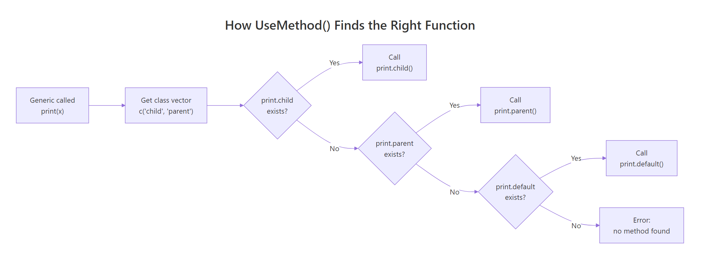
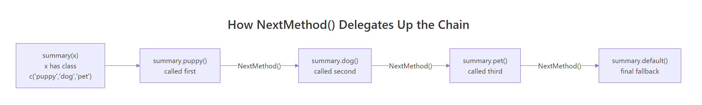

S3 Method Dispatch: Exactly How R Finds the Right Function for Your Object
S3 method dispatch is R's mechanism for deciding which function implementation to run when you call a generic like print() or summary(), R inspects the object's class attribute, searches for a matching method name, and calls the first one it finds.
What happens when you call a generic function like print()?
Every time you type print(x), R doesn't just run one fixed function. It checks what kind of object x is, builds a method name from the generic and the class, and calls that specific function. This is S3 method dispatch, and it powers almost every interaction you have with R.
RDefine greeting class with print method
# Create a custom "greeting" classgreet <-structure("Hello from S3!", class ="greeting")# Define a print method specifically for "greeting" objectsprint.greeting <-function(x, ...) {cat("***", x, "***\n")}# R sees class(greet) is "greeting", so it calls print.greeting()print(greet)#> *** Hello from S3! ***# A plain character with the same data, no special methodplain <-"Hello from S3!"print(plain)#> [1] "Hello from S3!"
Same data, different output. When you called print(greet), R saw that greet has class "greeting", looked for a function named print.greeting, found it, and called it. When you called print(plain), there was no print.character in your environment, so R fell through to print.default. That lookup process is S3 dispatch.
So how does print() know to delegate? Let's look inside it.
RCreate a generic with UseMethod
# print() is a "generic", its entire body is one lineprint#> function (x, ...)#> UseMethod("print")#> <bytecode: 0x...>#> <environment: namespace:base>
That single line, UseMethod("print"), is the engine. Every S3 generic function follows this pattern: accept arguments, then immediately hand off to UseMethod(). The generic never does any real work itself. It's a dispatcher, not a doer.
Key Insight
Every S3 generic is a one-line function that calls UseMethod(). When you call print(x), R never executes any code after UseMethod("print"). Control transfers entirely to the matched method.
Try it: Create a custom format.greeting() method that returns the greeting wrapped in square brackets. Test it by calling format() on a greeting object.
RExercise: write format method
# Try it: write format.greeting()format.greeting <-function(x, ...) {# your code here}# Test:format(greet)#> Expected: "[Hello from S3!]"
Click to reveal solution
RExercise solution: write format method
format.greeting <-function(x, ...) {paste0("[", x, "]")}format(greet)#> [1] "[Hello from S3!]"
Explanation:format() is a generic just like print(). R found format.greeting() because class(greet) is "greeting".
How does UseMethod() search for the right method?
When UseMethod("generic") runs, R constructs candidate method names by pasting the generic name, a dot, and each class in the object's class vector. Then it searches three places in order.
Let's build a custom generic to see this clearly.
RDispatch describe on class
# Define a generic functiondescribe <-function(x, ...) {UseMethod("describe")}# Define methods for specific classesdescribe.character <-function(x, ...) {cat("A character string:", x, "\n")}describe.numeric <-function(x, ...) {cat("A number:", x, "\n")}# Dispatch in actiondescribe("hello")#> A character string: hellodescribe(42)#> A number: 42
R constructed describe.character for the first call and describe.numeric for the second. But what happens when no class-specific method exists?
RAdd default method fallback
# No describe.logical exists, R falls back to describe.defaultdescribe.default <-function(x, ...) {cat("I don't know what this is:", class(x), "\n")}describe(TRUE)#> I don't know what this is: logical
The .default suffix is a special pseudo-class. R always tries it last, after exhausting all classes in the class vector. If no .default exists either, R throws an error.
Here's the full algorithm R follows:
Build candidate names: For each class in class(x), construct generic.classN. Append generic.default at the end.
Search the method table: Check .__S3MethodsTable__. in the environment where the generic is defined (this is how package methods are found).
Search the calling environments: Walk up the environment chain from where the generic was called, up to the global environment.
Search the base environment: Check base R's registered methods.
If nothing matched: Throw "no applicable method" error.

Figure 1: How UseMethod() walks the class vector to find a matching method.
You can see just how many methods exist for common generics like print().
RCount registered print methods
# How many print methods are registered?print_methods <-methods(print)length(print_methods)#> [1] 232# Show the first 10head(print_methods, 10)#> [1] "print.acf" "print.activeConcord" "print.anova"#> [4] "print.aov" "print.aovlist" "print.ar"#> [7] "print.Arima" "print.arima0" "print.AsIs"#> [10] "print.aspell"
That's over 200 methods for a single generic. Every time you call print(), R searches through these to find the right one for your object's class.
Warning
UseMethod() never returns to the generic's body. Any code you write after UseMethod() inside a generic function is unreachable. R transfers control entirely to the matched method.
Try it: Write a describe.logical method for the describe generic we created above. It should print "A logical value: TRUE" or "A logical value: FALSE". Verify it's called instead of the default.
RExercise: add logical method
# Try it: write describe.logical()describe.logical <-function(x, ...) {# your code here}# Test:describe(TRUE)#> Expected: "A logical value: TRUE"
Explanation: Now R finds describe.logical before falling through to describe.default.
What role does the class vector play in dispatch?
An object's class isn't always a single string. It can be a character vector like c("glm", "lm"), and the order of that vector controls which method runs first. R walks the vector left to right, trying each one until it finds a match.
RSet class vector for inheritance
# An employee with multiple roles, order mattersemp <-structure(list(name ="Ada", level ="senior", dept ="engineering"), class =c("senior_dev", "developer", "employee"))describe.senior_dev <-function(x, ...) {cat("Senior developer:", x$name, "in", x$dept, "\n")}describe.developer <-function(x, ...) {cat("Developer:", x$name, "\n")}describe.employee <-function(x, ...) {cat("Employee:", x$name, "\n")}# R tries describe.senior_dev first, and finds itdescribe(emp)#> Senior developer: Ada in engineering
R tried describe.senior_dev, found it, and stopped. It never checked describe.developer or describe.employee. Now watch what happens when we change the class order.
RReorder classes to change dispatch
# Same person, different class orderemp2 <- empclass(emp2) <-c("employee", "developer", "senior_dev")describe(emp2)#> Employee: Ada
Now describe.employee fires first because "employee" is at position 1 in the class vector. The class vector is a priority list, the first class that has a matching method wins.
This becomes important with built-in R objects too. Many base types carry implicit class vectors.
RInspect class vectors of built-ins
# Integers have an implicit two-element class vectorx_int <-1Lclass(x_int)#> [1] "integer"# But R treats it as c("integer", "numeric") for dispatchis.numeric(x_int)#> [1] TRUE# Dates have a single classx_date <-Sys.Date()class(x_date)#> [1] "Date"# A GLM has a two-element class vectorfit <-glm(am ~ wt, data = mtcars, family = binomial)class(fit)#> [1] "glm" "lm"
That c("glm", "lm") class vector means: when you call summary(fit), R first looks for summary.glm. If that didn't exist, it would fall through to summary.lm. This is how S3 implements inheritance, not through formal parent/child declarations, but through the order of the class vector.
Tip
Use unclass() to strip the class and see the raw underlying object. This is handy for debugging when you want to bypass dispatch entirely and inspect the base structure.
Try it: Create an object with class c("electric_car", "car"). Define describe.car that prints the model, and describe.electric_car that prints the battery range. Predict which fires, then verify.
RExercise: create electric car class
# Try it: which method fires?ex_tesla <-structure(list(model ="Model 3", range_km =500), class =c("electric_car", "car"))describe.car <-function(x, ...) {cat("Car model:", x$model, "\n")}describe.electric_car <-function(x, ...) {# your code here}# Test:describe(ex_tesla)#> Expected: prints the battery range
Click to reveal solution
RExercise solution: electric car class
describe.electric_car <-function(x, ...) {cat("Electric car with", x$range_km, "km range\n")}describe(ex_tesla)#> Electric car with 500 km range
Explanation:"electric_car" is first in the class vector, so describe.electric_car wins. describe.car is never reached.
How does NextMethod() delegate to parent classes?
So far, when R finds a method, the dispatch stops. But sometimes you want a child method to do its own work and then pass control to the parent method. That's what NextMethod() does, it moves to the next class in the class vector and calls that method.
RChain methods with NextMethod
# Build a pet hierarchy: puppy > dog > petbuddy <-structure(list(name ="Buddy", breed ="Golden Retriever", toy ="tennis ball"), class =c("puppy", "dog", "pet"))summary.pet <-function(x, ...) {cat("Pet:", x$name, "\n")}summary.dog <-function(x, ...) {cat("Breed:", x$breed, "\n")NextMethod() # pass to summary.pet}summary.puppy <-function(x, ...) {cat("Favorite toy:", x$toy, "\n")NextMethod() # pass to summary.dog}summary(buddy)#> Favorite toy: tennis ball#> Breed: Golden Retriever#> Pet: Buddy
All three methods fired in sequence. summary.puppy ran first (because "puppy" is the first class), printed the toy, then called NextMethod(). That moved to summary.dog, which printed the breed and called NextMethod() again. Finally, summary.pet printed the name.

Figure 2: How NextMethod() delegates through a three-level class hierarchy.
One crucial detail: NextMethod() doesn't restart dispatch from scratch. R internally tracks where it is in the class vector using a special .Class variable. Each NextMethod() call advances the position by one.
RInspect dot Class inside methods
# Prove that NextMethod() passes the original object unchangedsummary.dog <-function(x, ...) {cat("Breed:", x$breed, "\n")cat(" Classes seen by this method:", paste(.Class, collapse =", "), "\n")NextMethod()}summary.puppy <-function(x, ...) {cat("Favorite toy:", x$toy, "\n")cat(" Classes seen by this method:", paste(.Class, collapse =", "), "\n")NextMethod()}summary(buddy)#> Favorite toy: tennis ball#> Classes seen by this method: puppy, dog, pet#> Breed: Golden Retriever#> Classes seen by this method: dog, pet#> Pet: Buddy
Notice how .Class shrinks at each step. In summary.puppy, it's c("puppy", "dog", "pet"). In summary.dog, it's c("dog", "pet"), "puppy" has been consumed. R uses this to know which method to call next.
Warning
Don't modify the dispatched object before calling NextMethod(). Changes to x inside a method are ignored by NextMethod(), R passes the original object, not your modified copy. If you need to pass extra information, use additional arguments.
Try it: Add a describe.puppy() method that prints "Puppy: <name>" and then calls NextMethod() to also trigger describe.dog(). Verify both lines print.
RExercise: use NextMethod chain
# Try it: chain describe.puppy -> describe.dogex_pup <-structure(list(name ="Max", breed ="Beagle"), class =c("puppy", "dog"))describe.dog <-function(x, ...) {cat("Dog breed:", x$breed, "\n")}describe.puppy <-function(x, ...) {# your code here, print name, then delegate}# Test:describe(ex_pup)#> Expected:#> Puppy: Max#> Dog breed: Beagle
Explanation:describe.puppy runs first, prints the name, then NextMethod() advances to describe.dog, which prints the breed.
How do internal generics and group generics dispatch differently?
Not all dispatch goes through UseMethod(). R has two special categories of generics that work differently: internal generics and group generics.
Internal generics like [, [[, c, +, and length are implemented in C code. They perform dispatch at the C level, which is faster but follows the same class-lookup logic. You can still write S3 methods for them, R checks for your method before falling back to the C implementation.
Group generics are even more powerful. Instead of writing a separate method for every operator (+, -, *, <, ==), you write one method for the group, and R routes all member operators through it. R has four groups:
Math, math functions: abs, sqrt, floor, ceiling, round, log, exp, sin, cos, etc.
Summary, aggregation: sum, min, max, range, prod, any, all
Complex, complex number operations: Re, Im, Mod, Arg, Conj
Let's see this in action with a custom currency class.
ROverload operators with Ops group
# A simple currency classcurrency <-function(amount, code ="USD") {structure(amount, class ="currency", currency = code)}# One method handles ALL arithmetic and comparison operatorsOps.currency <-function(e1, e2) { result <-NextMethod() # do the math on the underlying numbersif (is.numeric(result)) {currency(result, attr(e1, "currency")) } else { result # comparisons return logical }}price1 <-currency(29.99)price2 <-currency(15.50)# All of these route through Ops.currencyprice1 + price2#> [1] 45.49#> attr(,"class")#> [1] "currency"#> attr(,"currency")#> [1] "USD"price1 > price2#> [1] TRUE
One method handled both + and >. Inside the method, the special variable .Generic contains the actual operator name, so you can branch on it if needed.
The Math group works the same way for mathematical functions.
ROverload math with Math group
# Handle abs(), round(), floor(), etc. with one methodMath.currency <-function(x, ...) { result <-NextMethod()currency(result, attr(x, "currency"))}# Add a print method so output is cleanerprint.currency <-function(x, ...) {cat(attr(x, "currency"), formatC(unclass(x), format ="f", digits =2), "\n")}debt <-currency(-42.567)abs(debt)#> USD 42.57round(currency(19.999), digits =1)#> USD 20.00
Key Insight
Group generics let you write one method to handle dozens of operators. The special variable .Generic tells you which operator was actually called, so you can branch on it if + and * need different logic.
Try it: Create a Summary.currency method that handles sum() and max(). Test it with a vector of currency values.
RExercise: overload Summary group
# Try it: write Summary.currencySummary.currency <-function(..., na.rm =FALSE) {# your code here# Hint: use NextMethod() and wrap the result in currency()}# Test:ex_prices <-currency(c(10, 25, 15))sum(ex_prices)#> Expected: USD 50.00max(ex_prices)#> Expected: USD 25.00
Explanation:Summary.currency intercepts both sum() and max() because they belong to the Summary group. NextMethod() does the actual computation on the underlying numeric, then we rewrap it as currency.
How do you inspect and debug S3 dispatch?
When dispatch doesn't behave as expected, you need tools to see what R is doing behind the scenes. Base R gives you everything you need.
methods() is your first stop. It lists all methods for a generic or all methods defined for a class.
RList methods for a generic
# All methods for the summary() genericsummary_methods <-methods(summary)length(summary_methods)#> [1] 48# All methods defined for the "Date" classdate_methods <-methods(class ="Date")length(date_methods)#> [1] 35head(date_methods, 8)#> [1] "-.Date" "[.Date" "[[.Date"#> [4] "+.Date" "as.character.Date" "as.data.frame.Date"#> [7] "as.list.Date" "as.POSIXct.Date"
Some methods are hidden inside package namespaces. A * next to a method name in methods() output means it's not directly accessible. Use getAnywhere() to find it.
RFind hidden methods with getAnywhere
# Find a method hidden in a package namespacegetAnywhere("residuals.lm")#> A single object matching 'residuals.lm' was found#> It was found in the following places#> registered S3 method for residuals from namespace stats#> namespace:stats
For systematic debugging, you can trace the dispatch path manually. This function walks the class vector and checks whether each candidate method exists.
RBuild a method dispatch tracer
# Manual dispatch tracertrace_dispatch <-function(generic, x) { classes <-c(class(x), "default")cat("Dispatch for", generic, "on class:",paste(class(x), collapse =", "), "\n")for (cl in classes) { method_name <-paste0(generic, ".", cl) found <-length(utils::getAnywhere(method_name)$objs) >0 status <-if (found) "<-- MATCH"else" (skip)"cat(" Try:", method_name, status, "\n")if (found) break }}# Trace dispatch for a GLM objecttrace_dispatch("summary", fit)#> Dispatch for summary on class: glm, lm#> Try: summary.glm <-- MATCH
The tracer shows exactly which method R would pick. Try it with different objects to see the full lookup path.
RTrace dispatch on data frame
# A data frame has a simple single classtrace_dispatch("print", mtcars)#> Dispatch for print on class: data.frame#> Try: print.data.frame <-- MATCH# An ordered factor has a two-element class vectortrace_dispatch("print", ordered(c("low", "mid", "high")))#> Dispatch for print on class: ordered, factor#> Try: print.ordered (skip)#> Try: print.factor <-- MATCH
The ordered factor example is revealing: there's no print.ordered, so R falls through to print.factor. This is inheritance in action, the class vector c("ordered", "factor") gives ordered factors all the behavior of regular factors, plus any ordered-specific methods that exist for other generics.
Tip
Use methods(class = "yourclass") right after defining a new class. It's the fastest way to verify all your methods registered correctly. If a method doesn't show up, check for typos in the naming convention.
Note
The sloop package provides richer dispatch visualization. If you're working in RStudio, sloop::s3_dispatch(print(fit)) shows the full dispatch path with symbols indicating which methods were called, which exist but weren't called, and which were delegated to via NextMethod(). Install it with install.packages("sloop").
Try it: Use methods() to find all methods defined for the Date class. How many are there?
RExercise: count methods on Date
# Try it: count Date methodsex_date_methods <-methods(class ="Date")# your code here, print the count#> Expected: a number around 35
Explanation: R's Date class has around 35 methods, covering arithmetic (+.Date, -.Date), formatting (format.Date), comparison, and coercion. This shows how much behavior a single S3 class can accumulate.
Practice Exercises
Exercise 1: Temperature class with dispatch
Create a temperature class that stores a numeric value and a unit ("C" or "F"). Write:
print.temperature that displays like "25 °C" or "77 °F"
A convert generic with convert.temperature that switches Celsius to Fahrenheit (F = C × 9/5 + 32) and vice versa (C = (F − 32) × 5/9)
Verify that converting twice returns the original value.
RExercise one: temperature class
# Exercise 1: Build the temperature class# Hint: store as a list with $value and $unit, set class = "temperature"# Write your code below:
Click to reveal solution
RExercise one solution: temperature class
temperature <-function(value, unit ="C") {structure(list(value = value, unit = unit), class ="temperature")}print.temperature <-function(x, ...) { symbol <-if (x$unit =="C") "\u00b0C"else"\u00b0F"cat(x$value, symbol, "\n")}convert <-function(x, ...) UseMethod("convert")convert.temperature <-function(x, ...) {if (x$unit =="C") {temperature(x$value *9/5+32, "F") } else {temperature((x$value -32) *5/9, "C") }}boiling <-temperature(100, "C")print(boiling)#> 100 °Cprint(convert(boiling))#> 212 °Fprint(convert(convert(boiling)))#> 100 °C
Explanation: The convert generic uses UseMethod() to dispatch to convert.temperature. Round-tripping (convert twice) returns the original value, confirming the formulas are correct.
Exercise 2: Three-level shape hierarchy with NextMethod()
Build a 3-level class hierarchy: shape → polygon → triangle. Write an area() generic where:
area.triangle computes 0.5 × base × height, prints "Triangle area:", then calls NextMethod()
area.polygon prints "Computed by polygon method", then calls NextMethod()
area.shape prints the final result
Verify the full chain fires for a triangle with base = 10 and height = 6.
RExercise two: shape hierarchy
# Exercise 2: Build the shape hierarchy# Hint: class vector should be c("triangle", "polygon", "shape")# Store area in the object so parent methods can read it# Write your code below:
Explanation: All three methods fire in sequence because each calls NextMethod(). The class vector c("triangle", "polygon", "shape") defines the delegation order.
Exercise 3: Money class with Ops group generic
Create a money class with an Ops group generic. Two money values can only be added/subtracted if they share the same currency. Comparison operators should work across currencies (comparing raw amounts). Test these cases:
money(10, "USD") + money(5, "USD") → should work
money(10, "USD") + money(5, "EUR") → should error
money(10, "USD") > money(5, "EUR") → should return TRUE
RExercise three: money with Ops
# Exercise 3: Build the money class with Ops# Hint: use .Generic to detect whether the operation is arithmetic vs comparison# Write your code below:
Explanation: The Ops.money method uses .Generic to branch: arithmetic operations enforce same-currency, comparisons work on raw amounts. This is a real-world pattern for financial software.
Putting It All Together
Let's build a complete bank_account class that demonstrates every dispatch concept from this tutorial: generics, class vectors, NextMethod(), and group generics.
RDefine bank account constructor
# Constructor, returns an account with a subclass for the account typebank_account <-function(owner, balance =0, type ="checking") { subclass <-paste0(type, "_account")structure(list(owner = owner, balance = balance, type = type), class =c(subclass, "bank_account") )}# Print method for all bank accountsprint.bank_account <-function(x, ...) {cat(toupper(x$type), "ACCOUNT\n")cat(" Owner: ", x$owner, "\n")cat(" Balance:", paste0("$", formatC(x$balance, format ="f", digits =2)), "\n")}# Savings accounts add interest info to printprint.savings_account <-function(x, ...) {NextMethod() # print the base account info firstcat(" Type: Savings (0.5% monthly interest)\n")}# Custom generics for banking operationsdeposit <-function(account, amount, ...) UseMethod("deposit")withdraw <-function(account, amount, ...) UseMethod("withdraw")# Base deposit, works for all account typesdeposit.bank_account <-function(account, amount, ...) { account$balance <- account$balance + amountcat("Deposited $", formatC(amount, format ="f", digits =2), "\n") account}# Base withdrawwithdraw.bank_account <-function(account, amount, ...) {if (amount > account$balance) {cat("Insufficient funds!\n")return(account) } account$balance <- account$balance - amountcat("Withdrew $", formatC(amount, format ="f", digits =2), "\n") account}# Savings accounts charge a $2 withdrawal feewithdraw.savings_account <-function(account, amount, ...) {cat("Savings withdrawal fee: $2.00\n")withdraw.bank_account(account, amount +2)}
Now let's see the full system in action.
RPrint checking and savings accounts
# Create accountsalice_checking <-bank_account("Alice", 500, "checking")bob_savings <-bank_account("Bob", 1000, "savings")# Print dispatches to different methods based on classprint(alice_checking)#> CHECKING ACCOUNT#> Owner: Alice#> Balance: $500.00print(bob_savings)#> SAVINGS ACCOUNT#> Owner: Bob#> Balance: $1000.00#> Type: Savings (0.5% monthly interest)
The savings account's print method called NextMethod() to get the base info, then added its own line. Now let's test withdrawals.
withdraw.savings_account added the $2 fee, then called the base withdraw.bank_account with the adjusted amount. The base method did the actual balance deduction.
Let's verify our dispatch paths with the tracing function from earlier.
RVerify dispatch on bank accounts
# Confirm the dispatch path for each account typetrace_dispatch("withdraw", alice_checking)#> Dispatch for withdraw on class: checking_account, bank_account#> Try: withdraw.checking_account (skip)#> Try: withdraw.bank_account <-- MATCHtrace_dispatch("withdraw", bob_savings)#> Dispatch for withdraw on class: savings_account, bank_account#> Try: withdraw.savings_account <-- MATCH
Alice's checking account has no specialized withdraw method, so it falls through to withdraw.bank_account. Bob's savings account hits withdraw.savings_account first, which adds the fee and delegates down. That's the full S3 dispatch lifecycle in one working system.
Summary
Concept
What It Does
Example
UseMethod("generic")
Starts dispatch, looks for generic.class()
print <- function(x, ...) UseMethod("print")
generic.class() naming
Convention R uses to find methods
print.data.frame(), summary.lm()
generic.default()
Fallback when no class-specific method matches
print.default() handles anything without a custom method
Class vector
Multi-class objects, searched left to right
class(fit) returns c("glm", "lm")
NextMethod()
Delegate to the next method in the class chain
Child does its work, then passes to parent
.Generic
Inside a method: which generic was called
In Ops.currency, tells you if + or > was used
.Class
Inside a method: remaining classes to try
Shrinks as NextMethod() advances through the chain
Internal generics
[, c, +, dispatch in C code
Write [.myclass to customize subsetting
Group generics
One method for a family of operators
Ops.myclass handles all arithmetic + comparison
methods()
List methods for a generic or class
methods(print), methods(class = "Date")
getAnywhere()
Find methods hidden in package namespaces
getAnywhere("residuals.lm")
References
Wickham, H., Advanced R, 2nd Edition. Chapter 13: S3. Link